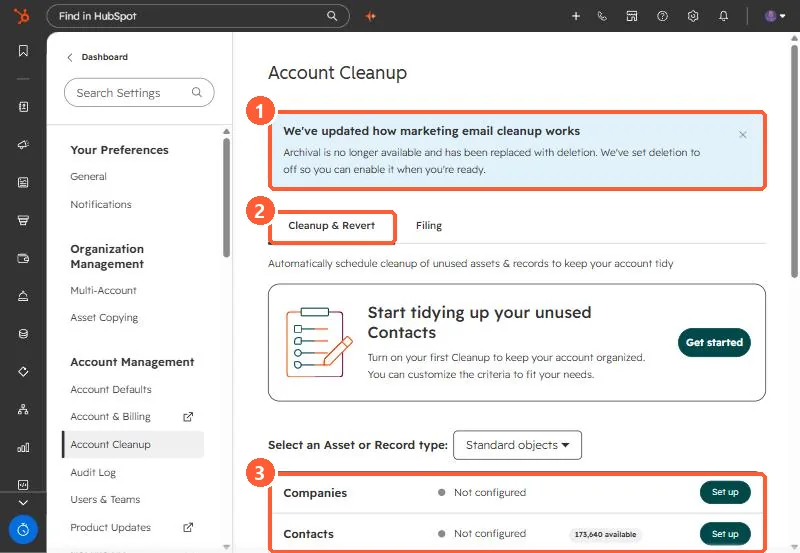

Short answer
Account Cleanup removes unused assets on a schedule. Once on, it runs on the first of each month. Draft blog posts and pages are archived, never deleted. Draft marketing emails not used in workflows, old unused segments, turned-off workflows and unused reports are deleted, with restore windows of 90 days (14 for reports). In my demo portal a banner says marketing email archival has been replaced by deletion, and deletion was set to off until you enable it.
1. The page
Go to Settings > Account Cleanup. The Cleanup & Revert tab lists each asset or record type and whether cleanup is configured.


2. What happens to each type
- Blog posts, landing pages, website pages: drafts with no scheduled publish date, older than your cutoff, are archived.
- Marketing emails: drafts, not scheduled, not referenced in workflows, older than your cutoff, are deleted. Restorable for 90 days.
- Segments: older than your cutoff and not referenced in other tools. Deleted, 90 days to restore.
- Workflows: turned off and older than your cutoff. Deleted, 90 days to restore.
- Reports: not modified within your cutoff and not in dashboards or scheduled emails. Deleted, 14 days to restore.
- Deals and other records: last modified before your cutoff. Deleted, 90 days to restore.
3. Before switching it on
Export or back up first, set the cutoff longer than you think, and check that templates you clone from are not drafts that will vanish. For automatic contact deletion, see deleting inactive contacts automatically.